22/03/2022 — Hiểu được điện tâm đồ đặc hiệu chẩn đoán này hẳn đã giúp ích rất nhiều cho bệnh nhân
Bản dịch tiếng Việt của bài "Understanding this pathognomonic ECG would have greatly benefitted the patient." – Dr. Smith’s ECG Blog. Giữ nguyên toàn bộ 32 hình ảnh của bản gốc.
Tác giả: Pendell Meyers
Trước hết hãy đọc điện tâm đồ này mà không cần bối cảnh. Bạn chưa cần bối cảnh vì điện tâm đồ này gần như đặc hiệu chẩn đoán (pathognomonic).

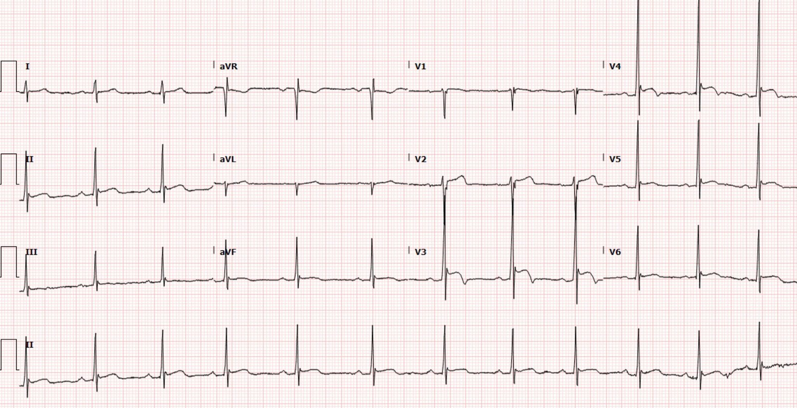
Sau khi đã học về hình ảnh sóng T đảo ngược lành tính (benign T wave inversion, BTWI) trên blog này nhiều năm trước, và từ đó đến nay đã gặp nhiều ca trên blog cũng như trong thực hành của mình, tôi nhận ra ngay đây là BTWI, một biến thể bình thường khá thường gặp. Tôi gặp khoảng một điện tâm đồ như thế này mỗi tháng trong thực hành. Không có thiếu máu cục bộ, chắc chắn hoàn toàn không có gì đáng lo về OMI.
Nó đáp ứng gần như tất cả các tiêu chuẩn mà Dr. Smith đã mô tả một cách nhất quán qua nhiều năm, sau khi xem xét một nhóm lớn bệnh nhân của Wang và cs. (xem thêm thông tin về điều này bên dưới)
1. Khoảng QT tương đối ngắn (QTc < 425ms)
2. Các chuyển đạo có sóng T đảo ngược thường có sóng J rất rõ.
3. Sóng T đảo ngược thường ở các chuyển đạo V3-V6 (khác với hội chứng Wellens, trong đó sóng T đảo ngược ở V2-V4)
4. Sóng T đảo ngược không tiến triển và nhìn chung ổn định theo thời gian (khác với Wellens, vốn luôn tiến triển). (bạn sẽ thấy ca này không tiến triển như Wellens)
5. Các chuyển đạo có sóng T đảo ngược (trước tim trái) thường có ST chênh lên ít nhiều
6. Các chuyển đạo trước tim phải thường có ST chênh lên điển hình của tái cực sớm kinh điển
7. Đi trước sóng T đảo ngược ở các chuyển đạo V4-V6 là sóng S rất nhỏ
8. Đi trước sóng T đảo ngược ở các chuyển đạo V4-V6 là sóng R biên độ cao
9. II, III và aVF cũng thường có sóng T đảo ngược. (chuyển đạo aVF có phần cuối sóng T đảo ngược rất ít trong ca này)
Bây giờ hãy xem điều gì có thể xảy ra nếu bạn chưa học về BTWI:
Một thiếu niên da đen (chúng tôi thường không ghi rõ da đen hay da trắng, v.v., nhưng trong ca này điều đó quan trọng) bị đái tháo đường típ 1 đến khoa cấp cứu (ED) vì đau ngực. Bệnh nhân đột ngột đau ngực sau xương ức kiểu đau nhói, không lan, kèm khó thở, cường độ 5/10.
Điện tâm đồ này (điện tâm đồ ở trên) là điện tâm đồ của bệnh nhân lúc đánh giá ban đầu:
Bệnh nhân có sẵn một điện tâm đồ nền trong hồ sơ:
Điện tâm đồ nền 1 năm trước:

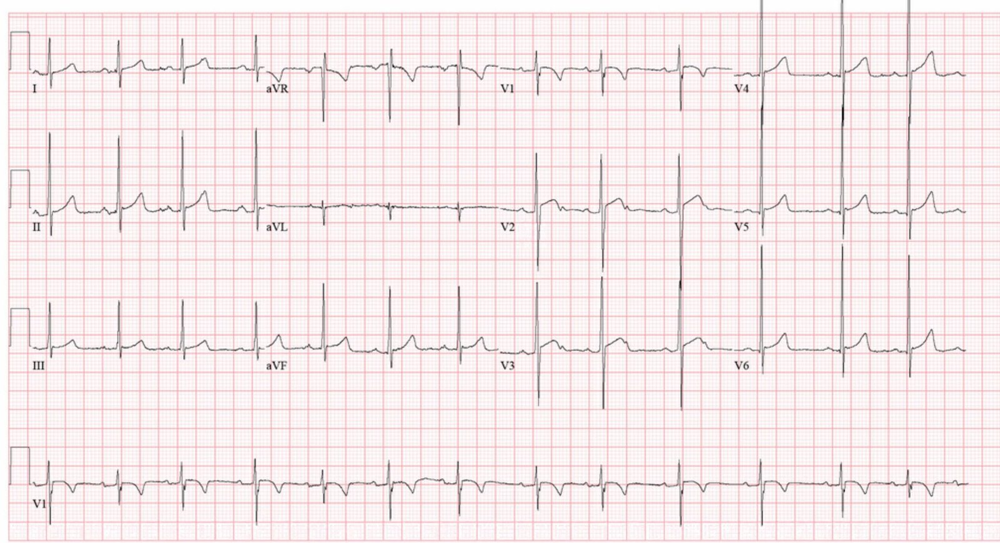
Mọi biến thể bình thường mà tôi biết đều có thể xuất hiện rồi mất đi, thay đổi theo thời gian.
Điện tâm đồ được đọc là STEMI.
Bệnh nhân được dùng aspirin, heparin, nitroglycerin và được chuyển cấp cứu tới một trung tâm có phòng thông tim (cath lab), nơi bệnh nhân được thông tim ngay khi đến. “Chúng tôi tiến hành thông tim cấp cứu vì điện tâm đồ bất thường, đau ngực và đái tháo đường típ 1.”
Chụp mạch vành bình thường.
Siêu âm tim chính thức bình thường.
Các điện tâm đồ liên tiếp trong thời gian nằm viện không thay đổi.
Troponin không phát hiện được.
Lúc này các dấu ấn viêm được gửi xét nghiệm, và kết quả bình thường.
Có vẻ như các triệu chứng của bệnh nhân đã hết vào một thời điểm nào đó.
Cuối cùng bệnh nhân được cho về nhà.
Hai tuần sau, bệnh nhân đến tái khám tại phòng khám tim mạch.

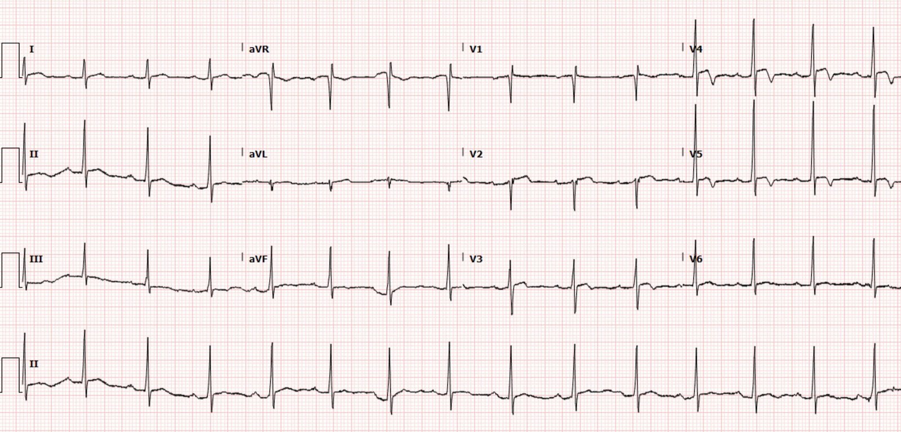
Đây là điện tâm đồ của bệnh nhân lúc đó:
4 tuần sau:

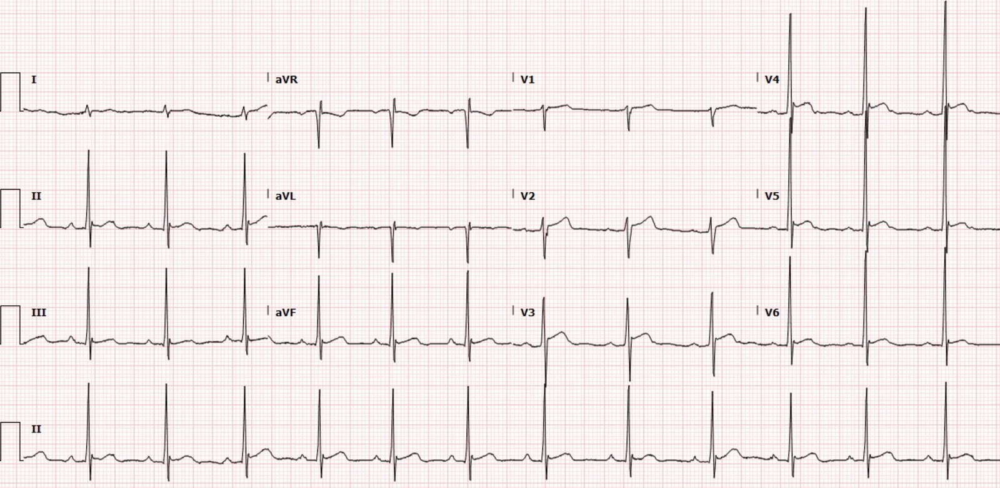
Hai năm trước sự kiện này, trong hồ sơ có một ghi chép khám sức khỏe thể thao:
“Hôm nay đến cùng bố mẹ để khám sức khỏe thể thao nhằm tham gia môn điền kinh….đã ghi một điện tâm đồ thường quy. Mặc dù đã nhiều lần điều chỉnh lại điện cực và ghi lặp lại, tất cả các lần ghi đều cho thấy nhịp xoang bình thường (NSR), nhưng có thể có LVH, có thể có viêm màng ngoài tim và ST chênh lên. Theo quy trình của chúng tôi, trong những trường hợp này cần chuyển khám tim mạch để được chứng nhận đủ điều kiện chơi thể thao. Đã cấp giấy cho giờ thể dục (PE) rằng em có thể đi bộ quanh sân, nhưng tạm thời tránh gắng sức thể lực cho tới khi hoàn tất đánh giá tim mạch.”
Vì lý do nào đó, bệnh nhân này dường như được tái khám tim mạch hằng năm.
BTWI là một biến thể bình thường đi kèm với tái cực sớm. K. Wang đã nghiên cứu hình ảnh này. Ông xem xét điện tâm đồ của toàn bộ 11,424 bệnh nhân có ít nhất một điện tâm đồ được ghi trong năm 2007 tại Hennepin County Medical Center và tách riêng 101 ca sóng T đảo ngược lành tính. 97 người là người da đen. 3.7% nam giới da đen và 1% nữ giới da đen có dấu hiệu này. 1 trên 5099 bệnh nhân da trắng có dấu hiệu này. Ngoài tỷ lệ 8.8% (9 trên 109) ở nam giới da đen 17-19 tuổi, dấu hiệu này phân bố đều giữa các nhóm tuổi.
Dr. Smith đã xem xét 101 điện tâm đồ này và mô tả các đặc điểm chính của hình ảnh:
1. Khoảng QT tương đối ngắn (QTc < 425ms)
2. Các chuyển đạo có sóng T đảo ngược thường có sóng J rất rõ.
3. Sóng T đảo ngược thường ở các chuyển đạo V3-V6 (khác với hội chứng Wellens, trong đó sóng T đảo ngược ở V2-V4)
4. Sóng T đảo ngược không tiến triển và nhìn chung ổn định theo thời gian (khác với Wellens, vốn luôn tiến triển).
5. Các chuyển đạo có sóng T đảo ngược (trước tim trái) thường có ST chênh lên ít nhiều
6. Các chuyển đạo trước tim phải thường có ST chênh lên điển hình của tái cực sớm kinh điển
7. Đi trước sóng T đảo ngược ở các chuyển đạo V4-V6 là sóng S rất nhỏ
8. Đi trước sóng T đảo ngược ở các chuyển đạo V4-V6 là sóng R biên độ cao
9. II, III và aVF cũng thường có sóng T đảo ngược.
Tiếp theo bạn sẽ thấy nhiều ca BTWI, với đủ mọi biến thể:


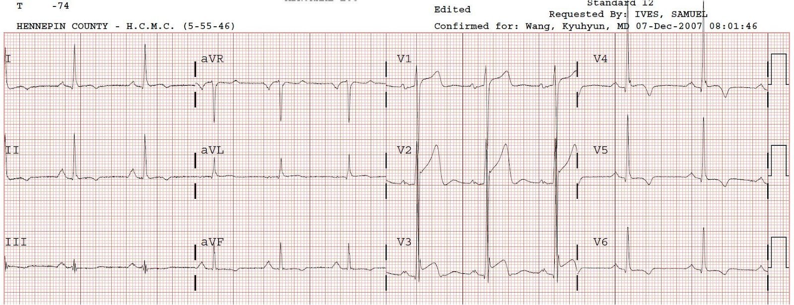


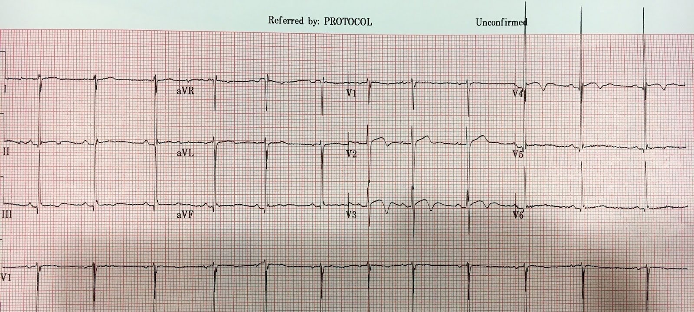


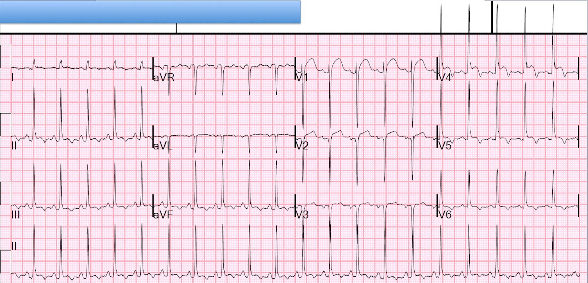

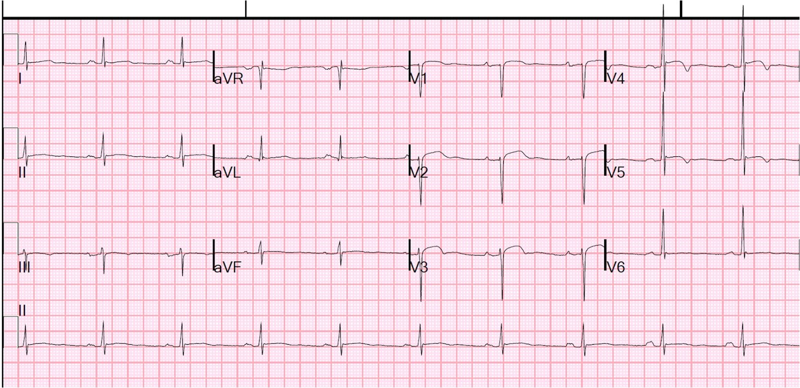

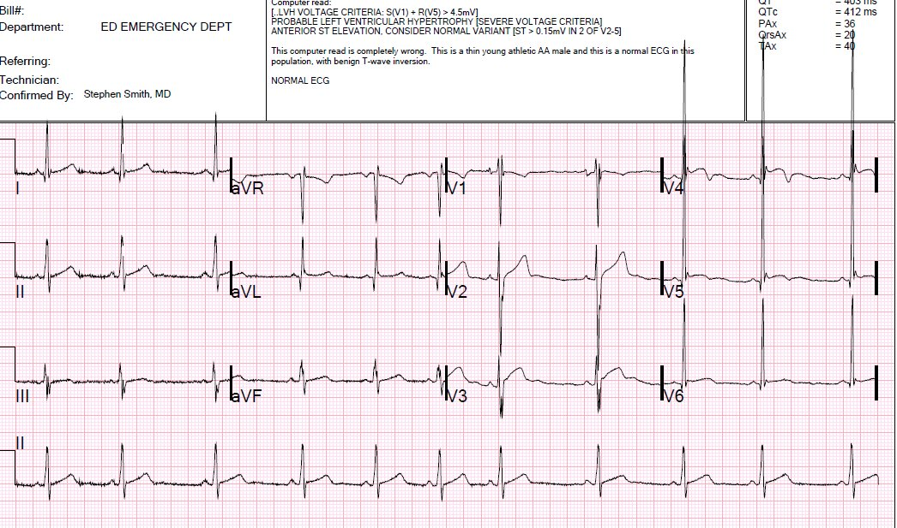

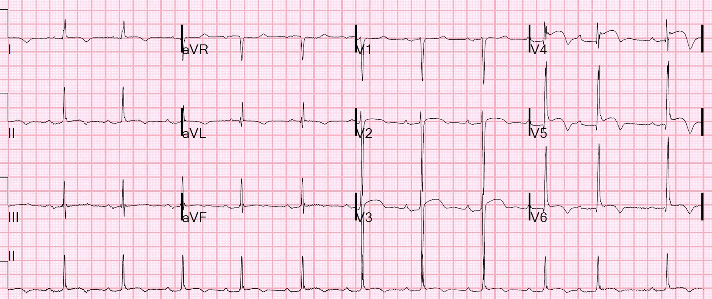

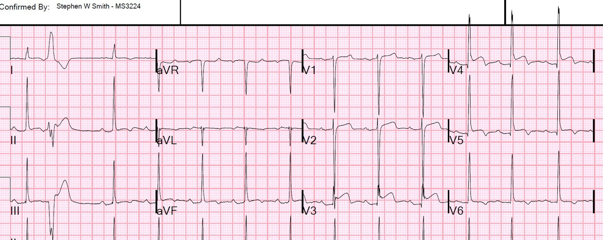

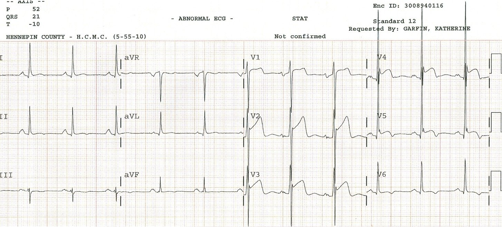

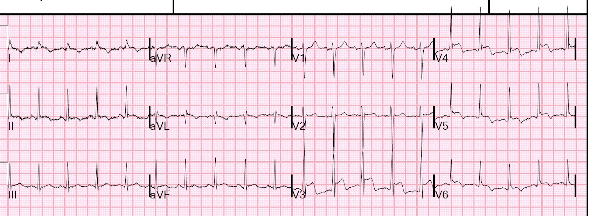
Ca này là sóng T đảo ngược lành tính kèm viêm cơ tim chồng lên, làm ST chênh lên quá mức ở V3-V6.
What does this ECG with significant ST Elevation represent? (Điện tâm đồ có ST chênh lên đáng kể này biểu hiện điều gì?)

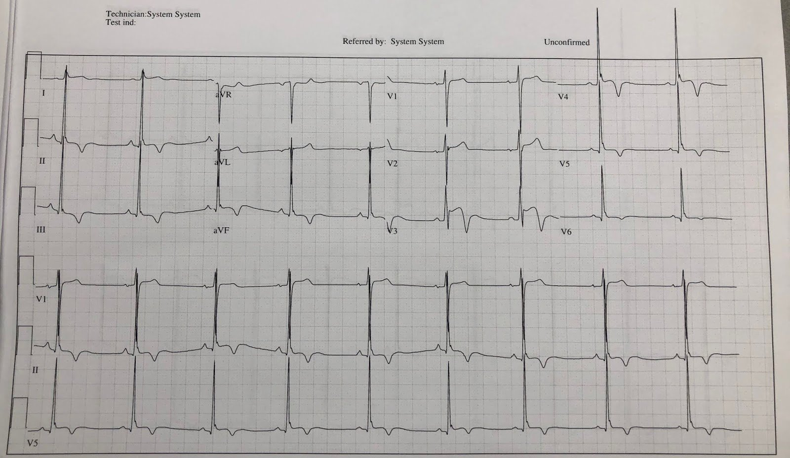

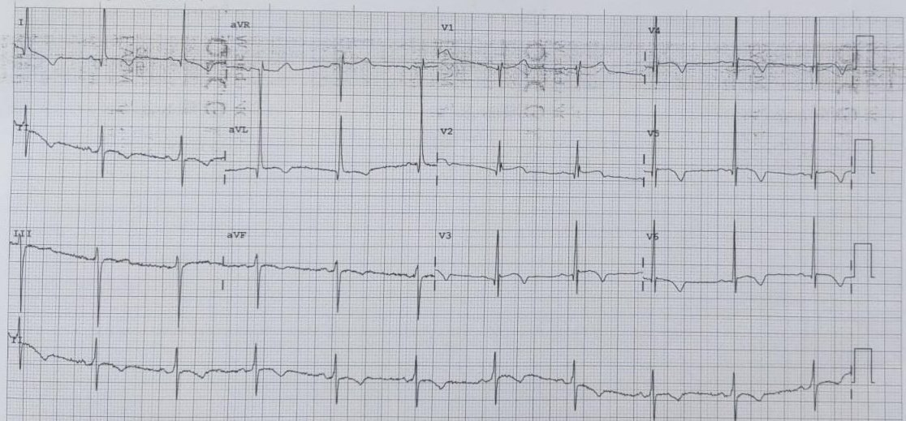

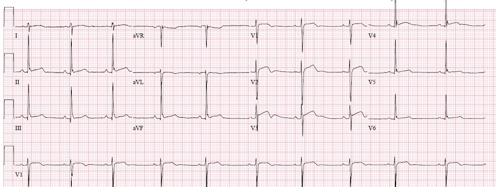
QUAN TRỌNG: bạn phải phân biệt được hình ảnh tái tưới máu của OMI với BTWI.
Chúng khác nhau ở nhiều điểm khó mô tả bằng lời. Hiển nhiên các bệnh nhân rất khác nhau về bệnh sử lâm sàng, sự hiện diện của triệu chứng đang diễn ra trong lúc có sóng T đảo ngược, troponin tăng về sau, v.v., nhưng các điện tâm đồ cũng khác nhau.
Hãy thử xem bạn có phân biệt được các ca này không, đáp án ở bên dưới:

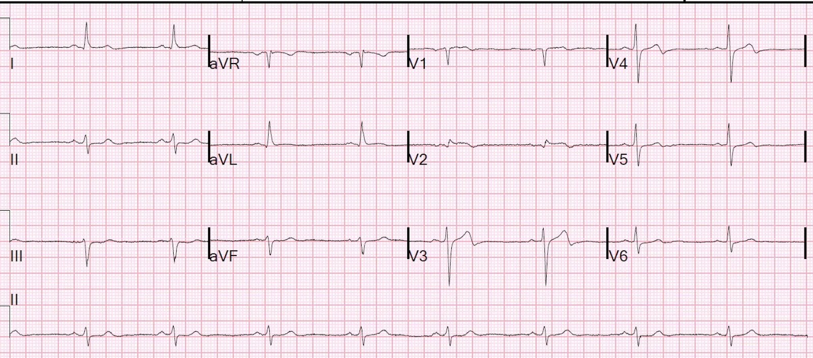

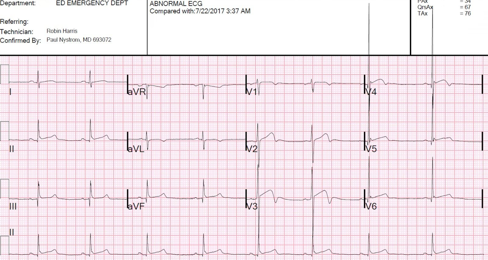

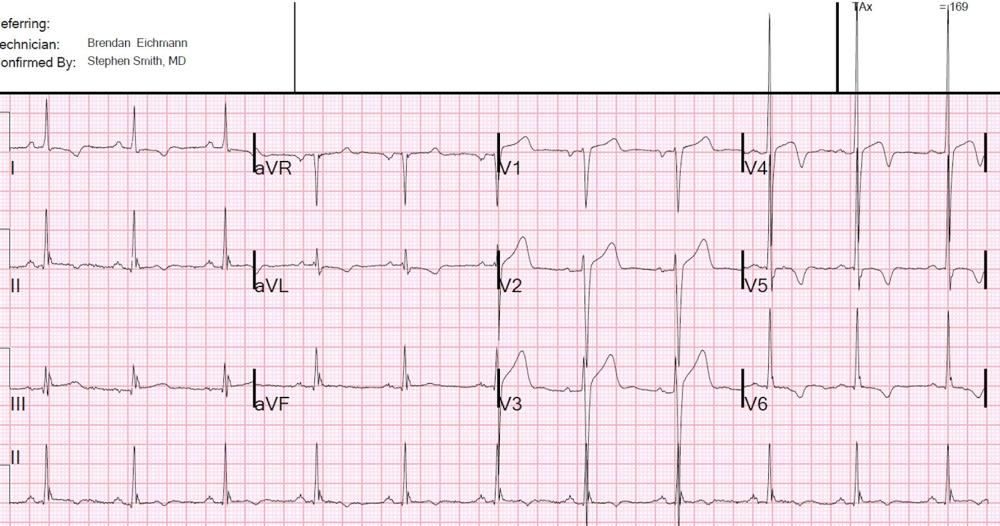
Đáp án:
Những điểm cần học:
Học các hình ảnh biến thể bình thường trên điện tâm đồ quan trọng gần ngang với học các hình ảnh OMI, và cũng khả thi như vậy nếu bạn sẵn lòng học vượt ra ngoài mô hình STEMI.
Các biến thể bình thường có thể thay đổi theo thời gian.
Không phải mọi sóng T đảo ngược đều là Wellens. Có nhiều hình ảnh giả quan trọng, bao gồm LVH và BTWI. Bạn có thể phân biệt chúng nhờ luyện tập.
BTWI là một biến thể bình thường đi kèm với tái cực sớm, thường gặp nhất ở nam giới trẻ da đen.
Xem các ca BTWI này để biết về các hình ảnh ở trên:
A 60-something male presents with crushing chest pain (Nam giới 60 mấy tuổi đến khám vì đau ngực dữ dội như bị đè ép)
A 50-something Australian with sudden severe epigastric and chest pain presented looking extremely ill. (Một người Úc 50 mấy tuổi đột ngột đau dữ dội vùng thượng vị và ngực, đến viện trong tình trạng trông rất nặng.)
What does this ECG with significant ST Elevation represent? (Điện tâm đồ có ST chênh lên đáng kể này biểu hiện điều gì?)
15 yo AAM with ST Elevation and T-wave Inversion. Hypertrophic Cardiomyopathy or Normal (“Variant”)? (Nam thiếu niên người Mỹ gốc Phi 15 tuổi có ST chênh lên và sóng T đảo ngược. Bệnh cơ tim phì đại hay bình thường (“biến thể”)?)
Two cases of ST Elevation with Terminal T-wave Inversion – do either, neither, or both need reperfusion? (Hai ca ST chênh lên kèm phần cuối sóng T đảo ngược – một ca, không ca nào hay cả hai ca cần tái tưới máu?)
T-wave inversions and dynamic ST elevation (Sóng T đảo ngược và ST chênh lên động)
Tachycardia, hyperthyroid, and ST elevation. What is it? (Nhịp nhanh, cường giáp và ST chênh lên. Đó là gì?)
2 Cases of Resolved Chest Pain with Dynamic Terminal T-wave Inversion (2 ca đau ngực đã hết kèm phần cuối sóng T đảo ngược động)
Is it Wellens’ Syndrome? (Đây có phải hội chứng Wellens?)
Anterior STEMI? (STEMI thành trước?)
Activate the Cath Lab? (Kích hoạt phòng thông tim?)
Young African American Male with Atypical Stabbing Chest Pain (Nam giới trẻ người Mỹ gốc Phi đau ngực kiểu dao đâm không điển hình)
Benign T-wave Inversion: view video or read text (Sóng T đảo ngược lành tính: xem video hoặc đọc bài)

===================================
BÌNH LUẬN CỦA TÔI, bởi KEN GRAUER, MD (22/3/2022):
===================================
Tôi thấy bài viết này của Dr. Meyers rất cần thiết để nhấn mạnh các hình ảnh MẤU CHỐT của sóng T đảo ngược (TWI ) và tái cực sớm (ER) — vốn nhiều khả năng là lành tính. Tôi sẽ giới hạn bình luận của mình ở một vài điểm bổ sung được gợi ra từ ca ban đầu hôm nay.
ĐIỂM #1: Bệnh sử
- Mặc dù tôi hoàn toàn đồng ý với Dr. Meyers rằng bác sĩ lâm sàng cần nhận ra được ngay lập tức — không cần bối cảnh lâm sàng — xác suất rất cao về một tiên lượng lành tính gắn với bản ghi ban đầu trong ca hôm nay — thì Bệnh sử vẫn quan trọng.
- Rõ ràng, điện tâm đồ ban đầu này ( = điện tâm đồ #1, mà tôi đặt lại trong Hình 1) — thỏa mãn gần như tất cả 9 tiêu chuẩn do Dr. Wang và Dr. Smith đưa ra (như Dr. Meyers đã nêu ở trên). Tôi cũng lập tức nghĩ rằng đây nhiều khả năng nhất là một biến thể lành tính.
- Dù vậy, theo kinh nghiệm của tôi khi đọc lại (overread) rất nhiều điện tâm đồ nội trú và ngoại trú trong nhiều năm qua — Bệnh sử quá thường xuyên bị bỏ qua. Ví dụ — NẾU bệnh sử đi kèm điện tâm đồ #1 trong ca hôm nay là ngất không rõ nguyên nhân — và — Tiền sử Gia đình của bệnh nhân cho thấy một số người thân gần đột tử khi còn trẻ — thì bất chấp vẻ ngoài lành tính của điện tâm đồ #1 — việc đánh giá thêm bệnh nhân này chắc chắn sẽ được chỉ định.
- Suy cho cùng — điện tâm đồ #1 đáng chú ý không chỉ ở sóng T đảo ngược tại chuyển đạo V2,V3 — mà còn ở chỗ giống với hình ảnh Tái cực Sớm, với khía điểm J nổi bật ở nhiều chuyển đạo, đi kèm ST chênh lên dạng lõm (concave-up) ở nhiều chuyển đạo (đạt >2 mm ở chuyển đạo V3). Và, như tôi sẽ nhấn mạnh ngay sau đây — trên một điện tâm đồ muộn hơn của bệnh nhân này (tức là điện tâm đồ #4 — trong Hình 2) — hoàn toàn không có sóng T đảo ngược (chỉ có khía điểm J kèm ST chênh lên dạng lõm ở nhiều chuyển đạo). Rõ ràng — có sự chồng lấp giữa hội chứng BTWI và hội chứng ER.
- 2 gạch đầu dòng vừa rồi có liên quan đến bác sĩ lâm sàng làm cấp cứu — vì các hình ảnh ER ở những mức độ khác nhau phổ biến hơn BTWI. Mặc dù tuyệt đại đa số người trẻ tuổi đến cấp cứu có hình ảnh ER trên điện tâm đồ có tiên lượng lành tính — vẫn có một tỷ lệ nhỏ nhưng có thật trong số họ về sau xảy ra biến cố rối loạn nhịp tim gây tử vong (Zakka & Refaat- ACC, 2016).
- ĐIỀU CỐT LÕI: Dr. Meyers đã nêu một điểm rất hay khi nhấn mạnh khả năng cao về tiên lượng lành tính đi kèm những bản ghi như điện tâm đồ #1 trong Hình 1. Nhưng việc khai thác cả Tiền sử bản thân lẫn gia đình ở những bệnh nhân như vậy (hỏi về ngất–tiền ngất, hoặc triệu chứng của rối loạn nhịp ác tính) — là điều thiết yếu để xử trí tối ưu.
- T.B. (P.S.): Lưu ý rằng trong ca hôm nay — mô tả ngắn gọn về bệnh sử đau ngực ở thiếu niên này nghe không thuyết phục cho một biến cố tim cấp. Với khả năng (tỷ lệ hiện mắc) thấp như vậy của một biến cố tim cấp — lẽ ra đã có thể tránh được một đợt nhập viện và đánh giá rộng rãi nếu các bác sĩ điều trị nhận thức được tầm quan trọng của việc cân nhắc Bệnh sử lâm sàng của thiếu niên này.

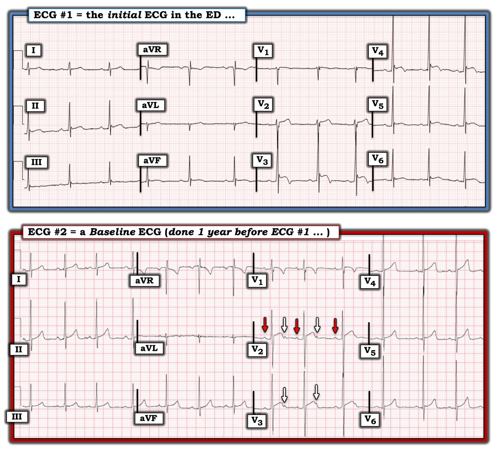
ĐIỂM #2: Các Dấu hiệu Điện tâm đồ Đã Thay đổi!
Mặc dù đúng là hình dạng sóng ST-T trong phần lớn các biến thể tái cực (tức là TWI, ER, và các biến thể khác) không thay đổi nhiều (ngoài những biến đổi do yếu tố kỹ thuật như vị trí đặt điện cực chuyển đạo) — vẫn có thể có thay đổi, thậm chí đáng kể, từ điện tâm đồ này sang điện tâm đồ kế tiếp ở các biến thể tái cực này! Điều này thể hiện cực kỳ rõ trong ca hôm nay!
- Greenfield và Rembert ghi nhận rằng tới 1/3 số bệnh nhân có ER nhưng không có triệu chứng tim — có thể cho thấy mức ST chênh lên thay đổi rõ rệt từ bản ghi này sang bản ghi khác. Những bệnh nhân ER này không có thiếu máu cục bộ — và sự thay đổi mức ST chênh lên không liên quan đến tần số tim hay biên độ QRS (Variation in ST-Segment Elevation in Early Repolarization: Electrocardiography 40:10,2007).
- Aagaard và cs. đã bình luận về ảnh hưởng của trương lực phó giao cảm lên sự xuất hiện và tồn tại của các thay đổi sóng ST-T trong ER (Circulation 9: e003577, 2016). Các dấu hiệu ST-T của ER phổ biến hơn ở vận động viên được tập luyện — và các dấu hiệu điện tâm đồ này giảm đi (và có thể biến mất) ở nhiều vận động viên một khi họ ngừng hoạt động thể thao.
- Thỉnh thoảng chúng tôi cũng ghi nhận khả năng tương tự (không thường gặp) — với các thay đổi sóng ST-T của ER trong khoảng vài giờ khi đang ghi các điện tâm đồ liên tiếp (Xem bài ngày 24 tháng Bảy năm 2013, cùng các bài khác — trên Dr. Smith’s ECG Blog).
- ĐIỂM THEN CHỐT (PEARL) #1: Nhận thức được khả năng biến đổi này của các thay đổi sóng ST-T trong ER (và/hoặc TWI) là điều thiết yếu — vì dù điều này không thường gặp, nó cho thấy rằng ngay cả ở bệnh nhân có biến thể tái cực lành tính — vẫn có thể thấy một số thay đổi sóng ST-T trên các điện tâm đồ liên tiếp!
- BẠN có nhận thấy sự khác biệt rõ rệt giữa điện tâm đồ ban đầu trong ca hôm nay — so với bản ghi nền thực hiện 1 năm trước đó không? (điện tâm đồ #1 so với điện tâm đồ #2 trong Hình 1). Cả hai bản ghi đều cho thấy tăng tiến sóng R rất tốt và biên độ QRS tăng — nhưng khía điểm J và mức ST chênh lên rõ ràng đã tăng lên kể từ khi ghi bản ghi nền — và — sóng T đảo ngược nói trên nay đã xuất hiện ở chuyển đạo V3,V4 của điện tâm đồ #2.
- ĐIỂM THEN CHỐT (PEARL) #2: BẠN có nhận thấy khía bất thường ngay sau sóng T ở chuyển đạo V2 và V3 của điện tâm đồ #2 không? (các mũi tên TRẮNG trên điện tâm đồ #2 — so với các mũi tên ĐỎ chỉ sóng P xoang). Đây là một hình ảnh biến thể bình thường thú vị khác mà chúng tôi đã bình luận trong bài ngày 10 tháng Bảy năm 2021 trên Dr. Smith’s ECG Blog (hình ảnh này thường gặp nhất ở trẻ nhỏ — nhưng ca hôm nay cho thấy nó cũng có thể gặp ở thiếu niên).
Để nhấn mạnh mức độ mà đôi khi các hình ảnh ER và TWI có thể thay đổi — tôi đã đặt lại bản ghi ban đầu trong ca hôm nay — cùng với các điện tâm đồ theo dõi của bệnh nhân này, ghi 2 tuần và 4 tuần sau đó (Hình 2).

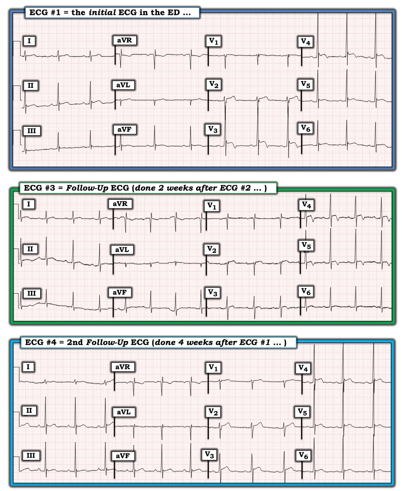
So sánh với các điện tâm đồ Theo dõi:
Mặc dù trục mặt phẳng trán tương tự nhau ở cả 3 bản ghi trong Hình 2 — tôi cho rằng có những khác biệt rõ rệt về hình dạng sóng ST-T ở các chuyển đạo ngực giữa 3 bản ghi này.
- Một số khác biệt sóng ST-T này có thể do khác biệt về vị trí đặt điện cực chuyển đạo ngực. Dù vậy — tôi không cho rằng mọi khác biệt sóng ST-T đều là hệ quả của khác biệt về tăng tiến sóng R!
- Không chỉ vị trí sóng T đảo ngược đã dịch chuyển sang phía bên từ điện tâm đồ #1 đến điện tâm đồ #3 — mà hình dạng của đoạn ST cũng đã thay đổi! Lưu ý rằng ST chênh lên ở chuyển đạo V2,V3 của điện tâm đồ #1 có dạng dốc lên, và đi kèm sóng J nổi bật. Ngược lại — ST chênh lên ở chuyển đạo V4,V5 trên điện tâm đồ #3 có dạng vòm (coving) và không còn đi kèm khía điểm J. Nếu xem riêng — tôi sẽ hoàn toàn không tin rằng hình ảnh trên điện tâm đồ #3 là lành tính!
- 2 tuần sau — điện tâm đồ #4 được ghi. Với chuỗi diễn biến này — tôi cho rằng nhiều khả năng sự trở lại của khía điểm J kèm ST chênh lên ở nhiều chuyển đạo báo hiệu sự tiến triển để một lần nữa (có lẽ trong vài tuần nữa) quay về hình ảnh ER/TWI thấy trên điện tâm đồ #1. Nhưng lưu ý rằng chưa có sóng T đảo ngược nào trên điện tâm đồ #4.
- ĐIỂM THEN CHỐT CUỐI CÙNG (PEARL) #3: Quan trọng ngang với việc nhận ra khả năng cao của hình ảnh điện tâm đồ lành tính trên điện tâm đồ #1 — là nhận thức rằng đôi khi, có thể có biến đổi thậm chí rõ rệt (trong những khoảng thời gian ngắn hơn hoặc dài hơn) ở hình ảnh sóng ST-T vốn lành tính của ER/TWI.